Zeitbeiwertverfahren, Einheitsganglinie, Block- und detaillierte Modelle#
Einführung#
In diesem Notebook werden verschiedene Möglichkeiten zur Schätzung einer Niederschlags-Abfluss-Ganglinie mit unterschiedlichem Komplexitätsgrad angewandt.
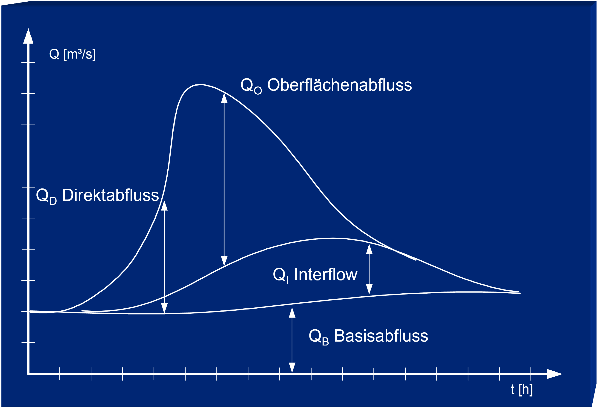
(Quelle: Margulis 2020)Zunächst wird das Zeitbeiwertverfahren angewandt, um anhand von empirischen Werten den Spitzenfluss für ein kleines Einzugsgebiet (EZG) im Ruhrgebiet (Essen-Kettwig) zu schätzen. Anschließend stellen wir einige komplexere Modelle vor. Hierzu gehören die Modelle des Soil Conservation Service (SCS), Unit Hydrograph (SCS-UH) und Curve Number (SCS-CN), welche ihr auch in der Vorlesung kennengelernt habt. Wir berechnen die maximale Abflussspende mithilfe der CN-Methode, wobei davon ausgegangen wird, dass die EZG-Eigenschaften wie Neigung und Rauheit im gesamten EZG homogen sind. In diesem Fall werden also alle Bereiche des Einzugsgebiets als eine Einheit behandelt, was auch als Block-Modell bezeichnet wird.
Abschließend verwenden wir eine Open-Source-Geodatenbibliothek, um aus digitalen Höhendaten (DGM) ein einfaches detailliertes Modell des Einzugsgebiets des Rinderbaches in Essen-Kettwig zu erstellen. Wir berechnen die Fließrichtung und die Fließakkumulation, um ein EZG abzugrenzen und das Gewässernetz zu definieren, und erstellen daraus eine Ganglinie für ein Niederschlagsereignis.
Hierzu dient uns ein realitätsnahes Projekt, bei dem die resultierenden Abflüsse ermittelt werden sollen. Der sich ergebende Wasserstand betrifft ein hypothetisches Gerinne am Auslass dieses Einzugsgebietes. Hierdurch soll ein Gefühl für die Bandbreite des Spitzenabflusses als Reaktion auf ein Niederschlagsereignis entwickelt werden.
Umgebung einrichten#
Dieses Notebook benötigt bestimmte Python-Pakete. Bitte befolgen Sie die untenstehenden Anweisungen je nach Umgebung:
Lokale Umgebung:
Erstellen Sie lokal gemäß der README.md-Datei eine Conda‑Umgebung und installieren Sie die Pakete aus requirements.txt.
Binder: Binder legt die Umgebung automatisch anhand der Repository‑Konfiguration an. Eine manuelle Installation ist nicht erforderlich.
Google Colab (nicht empfohlen)
Führen Sie in Colab die folgende Zelle aus, um die notwendigen Pakete zu installieren. Wichtig: Starten Sie danach die Runtime neu (Runtime > Restart runtime). Wichtig: Da Colab auf Linux Ubuntu läuft, teile der Pysheds Bibliothek jedoch Windows Pakete benötigen, kann es sein, dass das Notebook hier Fehlermeldungen ausgibt.
Hinweis: Einige Pakete wie pysheds erfordern zusätzliche Schritte oder sind in Colab möglicherweise nicht voll kompatibel.
# Colab-Setup — lokal wird diese Zelle übersprungen.
import sys
if 'google.colab' in sys.modules:
import os
REPO_DIR = '/content/Wassermengenwirtschaft_und_Klimawandel'
NB_DIR = REPO_DIR + '/Inhalt/Notebooks/Hausarbeit'
if not os.path.isdir(REPO_DIR):
print('Colab-Setup: Repository wird geklont ...')
get_ipython().system('git clone https://github.com/gjohnen1/Wassermengenwirtschaft_und_Klimawandel.git ' + REPO_DIR)
get_ipython().run_line_magic('cd', NB_DIR)
# requirements.txt installieren. pysheds benötigt numpy<2 → numpy wird
# downgegradet, Colab-Paket-Resolver meldet ~10 Konflikte (jax, opencv,
# pytensor, ...). Diese Warnungen sind kosmetisch — keine dieser Pakete
# wird von der Hausarbeit verwendet.
# only-if-needed minimiert das Mitreißen anderer Downgrades.
print('Colab-Setup: Installiere Abhängigkeiten aus requirements.txt ...')
get_ipython().run_line_magic(
'pip',
'install -q --upgrade-strategy only-if-needed -r '
+ REPO_DIR + '/requirements.txt'
)
print()
print('Colab-Setup fertig.')
print('Die pip-Resolver-Warnungen zu numpy>=2 (jax, opencv, pytensor, music21, ...)')
print('sind kosmetisch — diese Pakete werden in der Hausarbeit nicht benutzt.')
print('Falls im Folgenden ein "numpy.rec"- oder ABI-Fehler auftritt:')
print(' Runtime > Restart runtime > diese Zelle erneut ausführen.')
else:
print('Nicht in Colab erkannt — lokaler/Binder-Modus wird genutzt.')
Nicht in Colab erkannt — lokaler/Binder-Modus wird genutzt.
# Alle benötigten Pakete importieren
import os
import sys
import math
import pandas as pd
import numpy as np
# Plotting und Visualisierung
import matplotlib.pyplot as plt
import matplotlib.patches as mp
import matplotlib.colors as colors
import matplotlib.cm as cmx
# Bokeh für interaktive Plots
from bokeh.plotting import figure, show
from bokeh.io import output_notebook
from bokeh.models import ColumnDataSource
from bokeh.layouts import gridplot
# Räumliche Datenverarbeitung
from pysheds.grid import Grid
# Aktuellen Arbeitsordner anzeigen (relevant beim ersten Lauf in Colab)
working_directory = os.getcwd()
print(working_directory)
C:\Users\grego\OneDrive - Universitaet Duisburg-Essen\GitHub\repos\Wassermengenwirtschaft_und_Klimawandel\Inhalt\Notebooks\Hausarbeit
Niederschlagsdaten herunterladen und importieren#
Für diese Hausarbeit verwenden wir Niederschlagsdaten des Deutschen Wetterdienstes (DWD) der Station Essen-Bredeney (ID 1303). Die DWD-Stationsdaten sind über das Open Data-Portal des DWD frei verfügbar; in den entsprechenden Stammverzeichnissen liegen täglich aufgelöste Klimasummen sowie hochaufgelöste (stündliche bzw. 10‑minütige) Niederschlagsmessungen vor.
Im Repository sind zwei vorbereitete CSV‑Dateien (heruntergeladen über die Python‑Bibliothek wetterdienst) abgelegt:
daily_1303.csv— tägliche Niederschlagshöhenhourly_1303.csv— stündliche Niederschlagshöhen
Wichtig: Ihr seid immer für eure eigene Datenvalidierung verantwortlich. Stündliche und tägliche Datenreihen können sich aufgrund unterschiedlicher Aggregationszeitfenster und Zeitzonen unterscheiden.
# Importiere tägliche Niederschlagsdaten der DWD-Station 1303 (Essen-Bredeney)
data_path = '../../Notebook_Daten/Hausarbeit_Daten/'
daily_df = pd.read_csv(
data_path + 'daily_1303.csv',
sep=';', decimal=',', parse_dates=['date'], index_col='date',
)
# Falls Zeitstempel in UTC vorliegen: tz entfernen für saubere Slicing-Operationen
if daily_df.index.tz is not None:
daily_df.index = daily_df.index.tz_localize(None)
daily_df.head()
| station_id | dataset | parameter | value | quality | |
|---|---|---|---|---|---|
| date | |||||
| 2024-01-02 | 1303 | climate_summary | precipitation_height | 21.4 | 1.0 |
| 2024-01-03 | 1303 | climate_summary | precipitation_height | 34.8 | 1.0 |
| 2024-01-04 | 1303 | climate_summary | precipitation_height | 6.3 | 1.0 |
| 2024-01-05 | 1303 | climate_summary | precipitation_height | 1.8 | 1.0 |
| 2024-01-06 | 1303 | climate_summary | precipitation_height | 0.3 | 1.0 |
# Importiere stündliche Niederschlagsdaten derselben Station
hourly_df = pd.read_csv(
data_path + 'hourly_1303.csv',
sep=';', decimal=',', parse_dates=['date'], index_col='date',
)
if hourly_df.index.tz is not None:
hourly_df.index = hourly_df.index.tz_localize(None)
hourly_df.head()
| station_id | dataset | parameter | value | quality | |
|---|---|---|---|---|---|
| date | |||||
| 2024-01-01 12:00:00 | 1303 | precipitation | precipitation_height | 0.1 | 1.0 |
| 2024-01-01 13:00:00 | 1303 | precipitation | precipitation_height | 0.0 | 1.0 |
| 2024-01-01 14:00:00 | 1303 | precipitation | precipitation_height | 0.0 | 1.0 |
| 2024-01-01 15:00:00 | 1303 | precipitation | precipitation_height | 0.0 | 1.0 |
| 2024-01-01 16:00:00 | 1303 | precipitation | precipitation_height | 0.0 | 1.0 |
Daten plotten#
Hier verwenden wir die Datenvisualisierungsbibliothek Bokeh, um die Niederschlagsdaten zum ersten Mal grafisch darzustellen. Die Bibliothek bietet die Flexibilität, Zeitskalen zu vergrößern und zu verkleinern, was bei der Erkundung und Überprüfung der Daten sehr hilfreich ist. Dies sollte immer einer der ersten Schritte bei der Modellerstellung sein.
# Bokeh in Notebook ausgeben
from bokeh.resources import CDN
output_notebook(resources=CDN)
daily_source = ColumnDataSource(daily_df)
hourly_source = ColumnDataSource(hourly_df)
p = figure(title='Niederschlagsdaten Essen-Bredeney (DWD 1303)',
width=750, height=300, x_axis_type='datetime')
p.vbar(x='date', width=pd.Timedelta(days=1), top='value',
bottom=0, source=daily_source,
legend_label='Tägl. Niederschlag', color='royalblue')
p.vbar(x='date', width=pd.Timedelta(hours=1), top='value',
bottom=0, source=hourly_source,
legend_label='Stündlicher Niederschlag', color='red')
p.legend.location = 'top_left'
p.xaxis.axis_label = 'Datum'
p.yaxis.axis_label = 'Niederschlag [mm]'
p.toolbar_location = 'above'
show(p)
Verwendet das Zoom-Tool, um die gemessenen Werte für Februar 2024 zu vergleichen. Passen die täglichen Volumina zu den Summen der stündlichen Werte?
# Vergleich von tagesaggregierten stündlichen Daten mit den Tagessummen
hourly_check = hourly_df.loc['2024-02-03':'2024-02-04', 'value'].sum()
daily_check = daily_df.loc['2024-02-03':'2024-02-04', 'value'].sum()
print(f'Summe stündlich 03.-04.02.2024 = {hourly_check:.1f} mm')
print(f'Summe täglich 03.-04.02.2024 = {daily_check:.1f} mm')
print('Diskrepanz:', round(hourly_check - daily_check, 2), 'mm')
Summe stündlich 03.-04.02.2024 = 21.0 mm
Summe täglich 03.-04.02.2024 = 20.0 mm
Diskrepanz: 1.0 mm
Die Tagessumme der stündlichen Daten weicht in der Regel nicht stark von der gemessenen Tagessumme ab — kleine Differenzen (< 2 mm) sind meist auf unterschiedliche Messzeiten (z.B. UTC vs. MEZ) und unterschiedliche Geräte (Niederschlagswippe vs. Pluviometer) zurückzuführen. In einem realen Projekt würde dies eine zusätzliche Überprüfung erfordern.
# Welche Spalten enthält der DWD-Datensatz?
print('daily_df Spalten:', list(daily_df.columns))
print('hourly_df Spalten:', list(hourly_df.columns))
daily_df Spalten: ['station_id', 'dataset', 'parameter', 'value', 'quality']
hourly_df Spalten: ['station_id', 'dataset', 'parameter', 'value', 'quality']
Beschreibung des Projekts#
Stellt euch vor, ihr arbeitet in einem kleinen Projektteam an der Planierung und Neupflasterung einer Parkplatzfläche im Stadtteil Essen-Kettwig. Ziel des Projektes ist auch die Installation einer Drainage, um das Wasser vom Parkplatz aufzufangen und in ein Regenrückhaltebecken (RRB) umzuleiten, anstatt es direkt in den Rinderbach zu leiten. Im RRB erfolgt dann eine stoffliche Vorbehandlung, um bei der Einleitung in das Gewässer das dortige Ökosystem nicht zu schädigen.
Das Projekt beginnt im Sommer und soll im Herbst abgeschlossen sein. Nimm für diese Aufgabe an, dass es sich um ein Einzugsgebiet von ca. 1 \(km^2\) handelt, das über ein neu zu planendes Gerinne in ein RRB mündet, bevor es in den Rinderbach geleitet wird.
Frage: Für ein Einzugsgebiet, das nur 1 \(km^2\) groß ist, welche Niederschlagsdauer ist für die Abschätzung des Scheitelabflusses erforderlich? z.B. 1 Minute, 10 Minuten, 1 Stunde, 6 Stunden, 24 Stunden, 48 Stunden?
Es gibt auch eine Stelle, an der ein natürliches Gerinne vorhanden ist, das der Einfachheit halber für das Projekt genutzt werden könnte. Dadurch könnten Ausgrabungen vermieden und der enge Zeitplan des Projekts beschleunigt werden. Der Standort müsste vermessen werden, um die genauen Abmessungen zu ermitteln.
Angenommen, ihr gebt die Vermessung in Auftrag und erhaltet von der Vermesser:in die folgenden Ergebnisse der natürlichen Geometrie des bereits vorhandenen Gerinnes.
Kanalbreite (b): 2 \(m\)
Tiefe des Gerinnes (h): 0,5 \(m\)
Hydraulisches Gefälle (S): 0,005 (0,5 %)
Rauheit (n): 0,017 (rauer Asphalt)
Im Wesentlichen geht es also darum, zu beurteilen, ob der vorhandene Kanal für die natürliche Entwässerung ausreicht. Und wie könnt ihr sicher sein, dass dies auch bei Starkregen der Fall ist? Ihr beginnt mit der Berechnung der Abflusskapazität:
Berechnen der Abflusskapazität#
Da die Gerinnegeometrie bekannt ist, ist es möglich, die Abflusskapazität unseres Gerinnes zu bestimmen. Wir berechnen zunächst die maximale Kapazität und bewerten dann, wie sich unser Spitzenabfluss hierzu verhält. Zur Abschätzung der Fließgeschwindigkeit eines Gewässers können wir die Fließformel nach Gauckler-Manning-Strickler anwenden:
b, h = 2, 0.5 # Breite und Tiefe in Metern
# Querschnittsfläche
A = b * h
# Benetzter Umfang (offenes Rechteckprofil: Sohle + 2 Seitenwände)
perim = b + 2 * h
# hydraulischer Radius
R = A / perim
# Sohlgefälle
S = 0.005
# Manning-Rauhigkeitsbeiwert n (nicht Strickler k_st)
n_manning = 0.017
# durchschnittliche Fließgeschwindigkeit (Manning)
V_avg_Gerinne = (1.0 / n_manning) * R ** (2.0 / 3) * S ** 0.5
print(f'Die durchschnittliche Fließgeschwindigkeit bei vollem Durchfluss beträgt {V_avg_Gerinne:.2f} m/s')
# maximale Abflusskapazität
Q_Gerinne_Kapazitaet = V_avg_Gerinne * A
print(f'Die volle Abflusskapazität des Gerinnes beträgt {Q_Gerinne_Kapazitaet:.2f} m³/s')
Die durchschnittliche Fließgeschwindigkeit bei vollem Durchfluss beträgt 2.00 m/s
Die volle Abflusskapazität des Gerinnes beträgt 2.00 m³/s
Berechnung der Ganglinie#
Langzeitaufzeichnungen mit gleichzeitig hoher zeitlicher Auflösung sind nur in seltenen Fällen zu finden, weshalb wir mit den verfügbaren Informationen unser Bestes geben. Im Folgenden sehen wir uns einige Möglichkeiten zur Erstellung einer Ganglinie an, die einen variierenden Detaillierungsgrad haben.
Grundsätzlich werden Ganglinien erstellt oder zumindest der Scheitelabfluss bestimmt, um Wasserbauwerke und andere Ingenieurbauwerke planen zu können. Wir beginnen mit einer sehr einfachen Schätzung, die nur minimale Eingangsinformationen benötigt, und gehen dann zu komplexeren Methoden über, die mehr Eingangsdaten benötigen.
In der Hydrologie interessieren uns v.a. Unter- und Überschreitungswahrscheinlichkeiten. Mit anderen Worten: Wie groß ist die Wahrscheinlichkeit, dass der Durchfluss an einem bestimmten Ort bei einer bestimmten Jährlichkeit die Kapazität des Gerinnes (oder eines Bauwerkes) überschreitet?
Für diese Art von Problemen gibt es keine richtige Antwort, sie sind offen und subjektiv – was bedeutet, dass jede Antwort ein gewisses Maß an (technischem) Urteilsvermögen erfordert. Das Thema Risiko wurde in der Vorlesung besprochen. Im Moment konzentrieren wir uns nur auf verschiedene Verfahren zur Übertragung einer effektiven Niederschlagsganglinie in eine Ganglinie des Direktabflusses.
Konvertiert das Volumen (mm pro Stunde oder Tag) in die Einheit des Volumenstromes#
Der Abfluss wird normalerweise in \(\frac{m^3}{s}\) gemessen und der Niederschlag wird häufig in mm pro Stunde oder Tag angegeben. Konvertiert den \(\frac{mm}{Tag}\)-Niederschlag in \(\frac{m^3}{s}\).
Zeitbeiwertverfahren#
Das Zeitbeiwertverfahren ist das am häufigsten verwendete Fließzeitverfahren zur Ermittlung des Scheitelabflusses von einer gleichmäßig überregneten Fläche mit einer konstanten Regenspende und einem konstanten Abflussbeiwert. Im englischsprachigen Raum wird das Verfahren als rational formula oder rational method (Verhältnismethode) bezeichnet.
Die Bezeichnung “Zeitbeiwertverfahren” stammt aus früheren Zeiten, als die Regenspende I aus dem Produkt einer Bezugsregenspende und eines Zeitbeiwertes für eine bestimmte Regendauer und Regenhäufigkeit berechnet wurde.
In Deutschland verwenden wir die regionalisierten Starkniederschlagsauswertungen des Deutschen Wetterdienstes (KOSTRA-DWD-2020), aufbereitet z.B. durch die Open-Source-Plattform OpenKO. Im SI-System lautet die rationale Gleichung:
mit:
Q: Scheitelabfluss \(\left[\frac{m^3}{s}\right]\)
C: Abflussbeiwert [-]
I: Regenspende \(\left[\frac{l}{s \cdot ha}\right]\)
\(A_{\text{EZG}}\): Einzugsgebietsfläche [ha]
Der Faktor \(10^{-3}\) ergibt sich aus \(1 \frac{l}{s \cdot ha} = 10^{-4} \frac{m^3}{s \cdot ha}\) und der Umrechnung der Fläche.
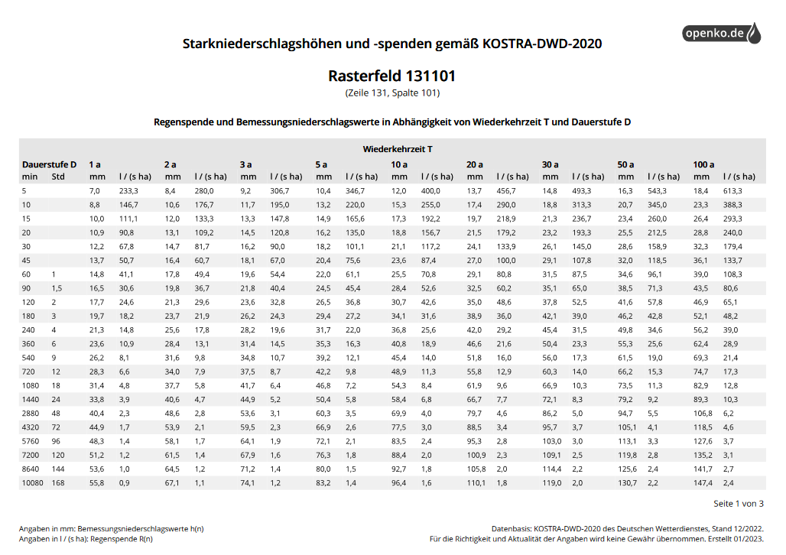
Die Regenspenden für unser Beispielgebiet wurden aus den OpenKO-KOSTRA-DWD-2020-Tabellen für die Rasterzelle 131101 (Essen) abgelesen.
Wir kennen die richtige Dauerstufe (X-Achse) für unser Einzugsgebiet noch nicht genau, aber wir können mehrere Dauerstufen auswählen und eine Sensitivitätsanalyse durchführen. Dies hilft uns abzuschätzen, wie empfindlich unser Modell auf die Dauerstufen reagiert. Die Diagonalen stellen verschiedene Wiederkehrintervalle (auch Jährlichkeiten genannt) dar (hier 2 und 100 Jahre). Das Wiederkehrintervall ist der Kehrwert der Überschreitungswahrscheinlichkeit und stellt wiederum die Eintrittswahrscheinlichkeit in einem bestimmten Jahr dar. ACHTUNG: Dies bedeutet nicht, dass ein Ereignis jeder Größenordnung nur einmal in diesem Wiederkehrintervall auftritt!
Im Folgenden werden daher die Dauerstufen als Bereiche ausgedrückt und deren Auswirkung auf das Abflussereignis untersucht.
def Zeitbeiwert_Spitzenabfluss(C, I, A_ha):
"""Berechne den Spitzenabfluss über das Zeitbeiwertverfahren (KOSTRA / SI).
Args:
C : Abflussbeiwert [-]
I : Regenspende [l/(s·ha)]
A_ha : Einzugsgebietsfläche [ha]
Returns:
Q : Scheitelabfluss [m³/s]
"""
return C * I * A_ha * 1e-3
# KOSTRA-DWD-2020 Werte für Rasterzelle 131101 (Essen) — l/(s·ha)
# Werte aus OpenKO abgelesen für Wiederkehrintervalle T_n = 2 a und T_n = 100 a
# Schlüssel: Dauerstufe in Minuten -> (I_2a, I_100a)
IDF_dict = {
5: (280.0, 613.3), # 5 min
15: (133.3, 293.3), # 15 min
60: ( 49.4, 108.3), # 60 min (1 h)
1440: ( 4.7, 10.3), # 1440 min (24 h)
}
# Einzugsgebietsfläche: 1 km² = 100 ha
A_ha = 100
# Drei Werte für den Abflussbeiwert C: Minimum, mittlerer Wert, Maximum
C_values = [0.5, 0.7, 0.9]
figs = []
plot_colors = ['green', 'orange', 'red']
for k, (i_min, i_max) in IDF_dict.items():
p = figure(title=f'Dauerstufe = {k} min', width=600, height=400)
for idx, c in enumerate(C_values):
Q_min = Zeitbeiwert_Spitzenabfluss(c, i_min, A_ha)
Q_max = Zeitbeiwert_Spitzenabfluss(c, i_max, A_ha)
print(f'{k} min, C={c}: Abflussbereich = {Q_min:.1f} – {Q_max:.1f} m³/s')
x = [2, 100] # Wiederkehrintervalle (Jahre)
y = [Q_min, Q_max]
p.line(x, y, legend_label=f'C={c}', color=plot_colors[idx], line_width=2)
p.scatter(x, y, color=plot_colors[idx], size=8)
p.yaxis.axis_label = 'Spitzenabfluss [m³/s]'
p.xaxis.axis_label = 'Wiederkehrintervall [Jahre]'
p.legend.location = 'top_left'
figs.append(p)
5 min, C=0.5: Abflussbereich = 14.0 – 30.7 m³/s
5 min, C=0.7: Abflussbereich = 19.6 – 42.9 m³/s
5 min, C=0.9: Abflussbereich = 25.2 – 55.2 m³/s
15 min, C=0.5: Abflussbereich = 6.7 – 14.7 m³/s
15 min, C=0.7: Abflussbereich = 9.3 – 20.5 m³/s
15 min, C=0.9: Abflussbereich = 12.0 – 26.4 m³/s
60 min, C=0.5: Abflussbereich = 2.5 – 5.4 m³/s
60 min, C=0.7: Abflussbereich = 3.5 – 7.6 m³/s
60 min, C=0.9: Abflussbereich = 4.4 – 9.7 m³/s
1440 min, C=0.5: Abflussbereich = 0.2 – 0.5 m³/s
1440 min, C=0.7: Abflussbereich = 0.3 – 0.7 m³/s
1440 min, C=0.9: Abflussbereich = 0.4 – 0.9 m³/s
layout = gridplot(figs, ncols=2, width=350, height=300)
show(layout)
Frage: Ist es den Diagrammen nach wichtiger die richtige Dauerstufe zu nutzen, ein geeignetes Wiederkehrintervall zu wählen oder einen geeigneten Abflussbeiwert zu wählen? Mit anderen Worten: Wie empfindlich reagiert das Modell auf die verschiedenen Eingabeparameter?
SCS Curve Number (CN)-Verfahren#
Beim SCS Curve Number Verfahren wird die erforderliche Datengrundlage ebenfalls gering gehalten. Es verfügt aber im Vergleich zum Zeitbeiwertverfahren über mehr Parameter, durch die hydrologischen Bodeneigenschaften (Bodenart, Bodenfeuchte, Bodennutzung, Jahreszeit) zur Schätzung von Oberflächenverlusten parametrisiert werden können:
mit:
\(N_{\text{eff}}\): abflusswirksamer Niederschlag [mm]
\(N\): Niederschlagsmenge [mm]
\(S\): Retention [mm]
\(I_a\): Anfangsverluste vor Abflussbeginn [mm] (\(I_a \approx 0.2 \cdot S\))
CN: Kurvennummer („Curve Number”)
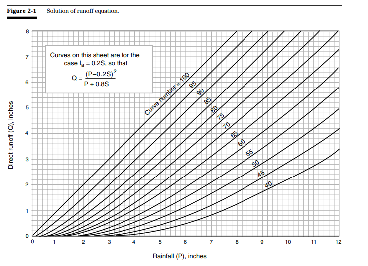
Aus entsprechenden Tabellenwerken geht hervor, dass CN-Werte für Schotterstraßen für die hydrologischen Bodengruppen A, B, C und D zwischen 76 und 91 liegen.
Quellen:
Seibert, S. & Auerswald, K. (2020). Hochwasserminderung im ländlichen Raum: Ein Handbuch zur quantitativen Planung. Springer Spektrum.
Maniak, U. (2016). Hydrologie und Wasserwirtschaft: Eine Einführung für Ingenieure. Springer Vieweg.
def calculate_N_eff(n_mm, cn):
"""Berechnet den abflusswirksamen Niederschlag N_eff [mm] aus N [mm] und CN.
Args:
n_mm : Niederschlagsmenge [mm]
cn : Curve Number [-]
Returns:
N_eff [mm]
"""
a_a = 0.2 # Anfangsverlust-Anteil
S = 254.0 * (100.0 / cn - 1.0)
if n_mm > a_a * S:
return (n_mm - a_a * S) ** 2 / (n_mm + (1 - a_a) * S)
return 0.0
# KOSTRA-DWD-2020 Niederschlagshöhen [mm] für Rasterzelle 131101 (Essen)
# Schlüssel: Wiederkehrintervall (Jahre) -> Dict aus Dauerstufe (min) -> Niederschlag [mm]
IDF_dict_mm = {
2: { # 2-jährliches Ereignis
5: 8.4,
15: 12.0,
60: 17.8,
1440: 40.6,
},
100: { # 100-jährliches Ereignis
5: 18.4,
15: 26.4,
60: 39.0,
1440: 89.3,
},
}
# CN-Werte für Schotterplatz auf Bodengruppen A, B, C, D
CNs = [76, 85, 89, 91]
# Berechne effektiven Niederschlag für jede Kombination
CN_N_eff = {}
for return_period, durations in IDF_dict_mm.items():
for duration, N in durations.items():
CN_N_eff[(return_period, duration)] = [calculate_N_eff(N, cn) for cn in CNs]
cn_df = pd.DataFrame(CN_N_eff)
cn_df.index = CNs
cn_df.head()
| 2 | 100 | |||||||
|---|---|---|---|---|---|---|---|---|
| 5 | 15 | 60 | 1440 | 5 | 15 | 60 | 1440 | |
| 76 | 0.000000 | 0.000000 | 0.037700 | 5.756412 | 0.067334 | 1.184585 | 5.108782 | 34.969534 |
| 85 | 0.000000 | 0.192504 | 1.454792 | 13.089292 | 1.640743 | 4.882673 | 12.050936 | 51.564559 |
| 89 | 0.134273 | 0.881966 | 3.093154 | 17.925314 | 3.376500 | 7.859298 | 16.699574 | 60.241821 |
| 91 | 0.399913 | 1.516110 | 4.307015 | 20.851862 | 4.647480 | 9.827059 | 19.533351 | 64.923479 |
Darstellung der Ergebnisse des CN-Verfahrens#
# Plot: Effektiver Niederschlag pro CN-Wert je Wiederkehrintervall und Dauerstufe
fig, axs = plt.subplots(1, 2, figsize=(16, 6), sharey=True)
for i, (return_period, _) in enumerate(IDF_dict_mm.items()):
ax = axs[i]
for duration in IDF_dict_mm[return_period].keys():
values = cn_df[(return_period, duration)]
ax.plot(CNs, values, marker='o', label=f'{duration} min')
ax.set_title(f'Wiederkehrwahrscheinlichkeit: {return_period}-jährlich')
ax.set_xlabel('CN')
ax.set_ylabel('Effektiver Niederschlag $N_{eff}$ [mm]')
ax.legend(title='Dauerstufe')
ax.grid(alpha=0.3)
plt.tight_layout()
plt.show()
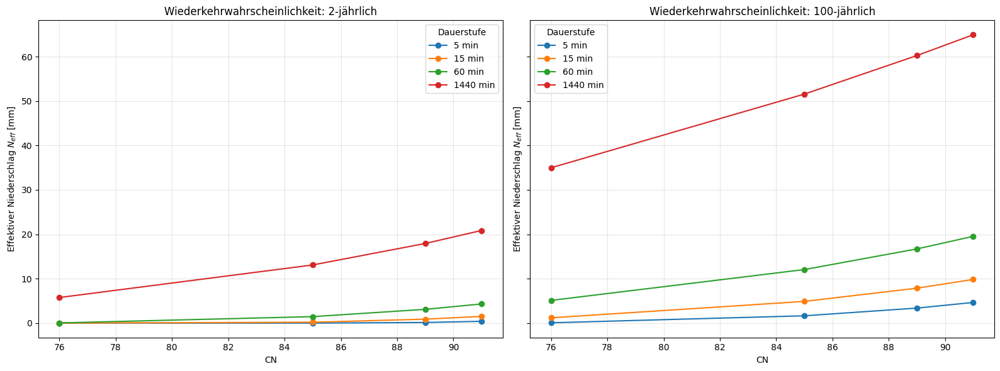
Ermittlung der Konzentrationszeit \(t_c\)#
Anders ausgedrückt entspricht die Konzentrationszeit \(t_c\) der Fließzeit des abflusswirksamen Niederschlags zwischen der Beobachtungsstelle und dem am weitesten entfernten Punkt des Einzugsgebietes. Im Folgenden wird die geschwindigkeitsbasierte Methode (Velocity Method) zur Ermittlung der Konzentrationszeit vorgestellt, welche vom NRCS in Kapitel 15 des National Engineering Handbook 630 empfohlen wird.
Es werden drei Fließprozesse unterschieden, die zeitlich hintereinander stattfinden: zuerst verteilter Flächenabfluss („sheet flow”), dann konzentrierter Flächenabfluss („shallow concentrated flow”) und zuletzt Gerinneabfluss („open channel flow”):
Der NRCS schlägt vor, der Berechnung der Konzentrationszeit das 2-jährliche, 24-stündige Niederschlagsereignis zugrunde zu legen. Aus den KOSTRA-Werten oben ergibt sich für unser Gebiet \(P_{2a,24h} \approx 40{,}6\) mm.
Sheet flow#
mit Längen in Fuß und \(P\) in Zoll (NRCS-Originaleinheiten).
def berechne_t_sheet(n, L_m, P_mm, s):
"""NRCS-Sheet-Flow-Formel (Stunden).
n : Manning's effektiver Rauhigkeitskoeffizient [-]
L_m : Fließlänge [m] (intern -> Fuß)
P_mm : Niederschlagshöhe 2a/24h [mm] (intern -> Zoll)
s : Gefälle [m/m]
"""
L_ft = L_m * 3.28084
P_in = P_mm / 25.4
return 0.007 * (n * L_ft) ** 0.8 / (P_in ** 0.5 * s ** 0.4)
def berechne_t_shallow(L_m, befestigt, S):
"""NRCS-Shallow-Concentrated-Flow Formel (Stunden).
L_m : Länge [m]
befestigt : True = bepflastert/asphaltiert, False = unbepflastert
S : Gefälle [m/m]
"""
L_ft = L_m * 3.28084
v_fps = (20.3282 if befestigt else 16.1345) * math.sqrt(S) # Fuß/s
return L_ft / (v_fps * 3600)
def berechne_t_channel(L_m, v_mps):
"""Gerinnefließzeit (Stunden)."""
return L_m / (v_mps * 3600)
# Annahmen für unser kleines (1 km²) Einzugsgebiet:
# Sheet flow:
n_sheet = 0.15 # Grasbewuchs (typisch: Beton≈0.011, Gras≈0.15, Wald≈0.4)
L_sheet = 100 # m (max. ca. 100 m bis Konzentration)
slope = 0.005 # m/m
P_2a_24h_mm = 40.6 # KOSTRA 24h-Niederschlag, 2-jährlich
t_sheet = berechne_t_sheet(n_sheet, L_sheet, P_2a_24h_mm, slope)
# Shallow concentrated flow:
L_shallow = 250
t_shallow = berechne_t_shallow(L_shallow, befestigt=True, S=slope)
t_c = t_sheet + t_shallow
print(f't_sheet = {t_sheet:.2f} h')
print(f't_shallow = {t_shallow:.2f} h')
print(f'==> Konzentrationszeit t_c ≈ {t_c:.2f} h ({t_c*60:.0f} min)')
t_sheet = 1.04 h
t_shallow = 0.16 h
==> Konzentrationszeit t_c ≈ 1.20 h (72 min)
Oben haben wir die Konzentrationszeit für unser sehr kleines Einzugsgebiet ermittelt. Auf Basis dieses Werts könnten wir den Bereich der Dauerstufen aus dem Zeitbeiwertverfahren weiter eingrenzen — etwa auf 5–30 Minuten, wenn wir uns auf die geschätzte \(t_c\) verlassen.
SCS Einheitsganglinienverfahren (SCS-UH)#
Beim SCS Unit Hydrograph handelt es sich um eine dimensionslose Einheitsganglinie mit vorgegebener Form. Ordinaten- und Abszissenwerte sind im Verhältnis zum Spitzenabfluss \(q_p\) und zur Scheitelanstiegszeit \(t_p\) angegeben.
Die idealisierte Einzugsgebietsreaktion auf ein Niederschlagsereignis wird in physikalisch basierten Modellen verwendet, um den Scheitelabfluss abzuschätzen. Die Form der Ganglinie hat viele Einflussfaktoren (Atmosphäre, Vegetation, Rauheit, Neigung, Bodenfeuchte, Durchlässigkeit, Porosität). Diese Werte werden idealerweise durch gleichzeitige Abfluss- und Niederschlagsmessung kalibriert.
mit:
\(q_p\): Scheitelabfluss \([\frac{m^3}{s}]\)
\(PRF\): Peak Rate Faktor (im SI-System: 0,208)
\(N_{\text{eff}}\): effektiver Niederschlag [mm]
\(A_{\text{EZG}}\): Einzugsgebietsfläche [km²]
\(t_p\): Scheitelanstiegszeit [h] — als Näherung wird hier \(t_p \approx t_c\) verwendet.
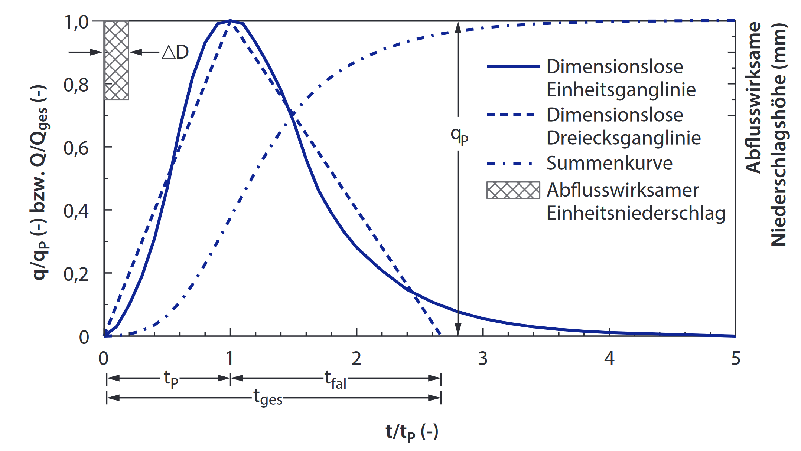
Quelle: Seibert, S. & Auerswald, K. (2020). Hochwasserminderung im ländlichen Raum. Springer Spektrum.
def Scheitelabfluss_SCS_UH(tc, A_km2, N_eff_mm):
"""SCS-Unit-Hydrograph-Spitzenabfluss (SI: PRF=0.208).
tc : Konzentrations- bzw. Scheitelanstiegszeit [h]
A_km2 : Einzugsgebietsfläche [km²]
N_eff_mm : effektiver Niederschlag [mm]
Rückgabe : q_p [m³/s]
"""
return 0.208 * A_km2 * N_eff_mm / tc
# Anwenden auf unser 1-km²-Gebiet, 24h-2a-Niederschlag (40.6 mm), variierende CN-Werte
A_km2 = 1.0
N_24h_2a = 40.6 # mm
print(f'SCS-UH-Spitzenabfluss für 24h/2a-Ereignis ({N_24h_2a} mm), '
f'A = {A_km2} km², t_c = {t_c:.2f} h:')
for cn in [50, 70, 80, 85, 90]:
N_eff = calculate_N_eff(N_24h_2a, cn)
q_p = Scheitelabfluss_SCS_UH(t_c, A_km2, N_eff)
print(f' CN={cn:>2} -> N_eff={N_eff:6.2f} mm -> q_p = {q_p:6.3f} m³/s')
SCS-UH-Spitzenabfluss für 24h/2a-Ereignis (40.6 mm), A = 1.0 km², t_c = 1.20 h:
CN=50 -> N_eff= 0.00 mm -> q_p = 0.000 m³/s
CN=70 -> N_eff= 2.78 mm -> q_p = 0.482 m³/s
CN=80 -> N_eff= 8.52 mm -> q_p = 1.477 m³/s
CN=85 -> N_eff= 13.09 mm -> q_p = 2.270 m³/s
CN=90 -> N_eff= 19.34 mm -> q_p = 3.355 m³/s
Flächendetailliertes Modell aus räumlichen Daten#
Wie in der Vorlesung besprochen, braucht der Niederschlag Zeit, um zum Auslass eines EZGs zu fließen. Auf dem Fließweg gibt es komplexe Wechselwirkungen mit der Atmosphäre, der Vegetation, der Bodenoberfläche und dem Untergrund, die es sehr schwierig machen, die Reaktion des Einzugsgebiets auf Niederschläge genau vorherzusagen. Jetzt verwenden wir DGM-Daten, um ein Becken abzugrenzen und ein einfaches flächendetailliertes Modell zu erstellen, um aus stündlichen und täglichen Niederschlagsdaten eine Einheitsganglinie zu erstellen. Wir versuchen im Anschluss, die von unserem Modell vorhergesagte Abflussmenge mit einer Zeitreihe gemessener Werte des Pegels Rinderbach/Walkmühle des Bergisch-Rheinischen Wasserverbands (BRW) zu vergleichen.
Hinweis: Von hier an verlassen wir das Beispiel des 1 \(\text{km}^2\)-Einzugsgebietes und betrachten ein größeres Einzugsgebiet derselben Region — das Einzugsgebiet des Rinderbachs in Essen-Kettwig.
Importieren und visualisieren des DGM#
Hier verwenden wir die Bibliothek Pysheds, um das digitale Geländemodell (DGM) zu verarbeiten. Die DGM-Kacheln stammen vom Land NRW (TIM-Online, Open Data, EPSG:25832, 1 m original), zusammengefügt und auf 30 m Rastergröße resampelt.
dem_path = data_path + 'merge_rinderbach_30x30.tif'
grid = Grid.from_raster(dem_path)
dem = grid.read_raster(dem_path)
# Pegel-Koordinaten Rinderbach/Walkmühle (UTM Zone 32N, EPSG:25832)
pegel_x, pegel_y = 356153.628, 5692060.287
C:\Users\grego\anaconda3\envs\hausarbeit_wb4\lib\site-packages\pysheds\io.py:134: UserWarning: No `nodata` value detected. Defaulting to 0.
warnings.warn('No `nodata` value detected. Defaulting to 0.')
C:\Users\grego\anaconda3\envs\hausarbeit_wb4\lib\site-packages\pysheds\io.py:134: UserWarning: No `nodata` value detected. Defaulting to 0.
warnings.warn('No `nodata` value detected. Defaulting to 0.')
fig, ax = plt.subplots(figsize=(8, 6))
fig.patch.set_alpha(0)
plt.imshow(dem, extent=grid.extent, cmap='terrain', zorder=2)
plt.colorbar(label='Höhe (m)')
plt.scatter(x=[pegel_x], y=[pegel_y], zorder=3, c='red', s=40,
label='Pegel Rinderbach/Walkmühle')
plt.grid(zorder=0)
plt.title('Digitales Geländemodell — Rinderbach (Essen-Kettwig)', size=14)
plt.xlabel('Rechtswert (UTM 32N) [m]')
plt.ylabel('Hochwert (UTM 32N) [m]')
plt.legend()
plt.tight_layout()
plt.show()
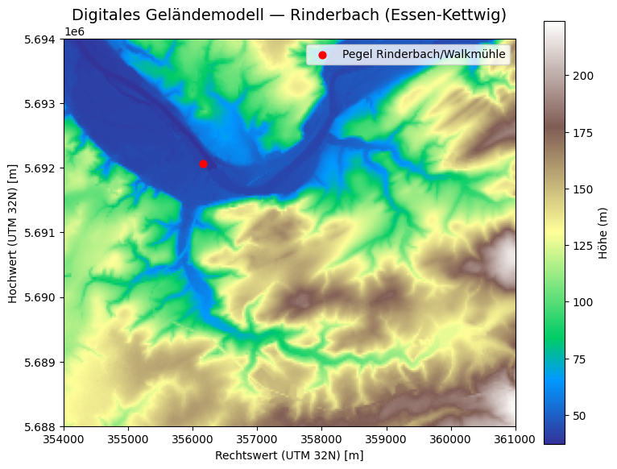
Identifizierung und Füllung von Senken im DGM#
Die bevorzugte Eingabe für den Fließrichtungs-Prozess ist ein digitales Höhenmodell ohne Senken. Wenn Senken vorkommen, kann dies zu einem fehlerhaften Fließrichtungs-Raster führen. In einigen Fällen können die Daten identifizierte Senken enthalten. Deswegen ist es wichtig, die Morphologie der Fläche gut genug zu kennen, um zu wissen, welche Features wirklich Senken in der Erdoberfläche sind, und bei welchen Features es sich nur um Fehler in den Daten handelt.
# Aufbereitung DGM
# 1) Pits (1-Zellen-Senken) auffüllen
pit_filled_dem = grid.fill_pits(dem)
# 2) Größere Mulden auffüllen
flooded_dem = grid.fill_depressions(pit_filled_dem)
# 3) Flache Bereiche auflösen (kontinuierliche Abwärtsströmung)
inflated_dem = grid.resolve_flats(flooded_dem)
Fließrichtungen aus DGM ableiten#
Jeder Zelle eines DGM-Rasters wird eine Fließrichtung zugewiesen, die durch Bestimmung der Neigung an diesem Pixel/dieser Zelle berechnet wird. Die Steigung wird durch Höhenvergleich mit den 8 umgebenden/verbundenen Pixeln ermittelt. Den Richtungen wird einer von acht Werten zugewiesen, die 8-Bit-Ganzzahlen (\(2^1, 2^2, 2^3, \dots 2^7\)) entsprechen.
32 |
64 |
128 |
16 |
- |
1 |
8 |
4 |
2 |
# D8-Richtungs-Mapping
# N NE E SE S SW W NW
dirmap = (64, 128, 1, 2, 4, 8, 16, 32)
# Fließrichtungen
fdir = grid.flowdir(inflated_dem, dirmap=dirmap)
fig = plt.figure(figsize=(8, 6))
fig.patch.set_alpha(0)
cNorm = colors.PowerNorm(gamma=0.5)
plt.imshow(fdir, extent=grid.extent, norm=cNorm, cmap='terrain', zorder=2)
boundaries = [0] + sorted(list(dirmap))
plt.colorbar(boundaries=boundaries, values=sorted(dirmap))
plt.scatter(x=[pegel_x], y=[pegel_y], zorder=3, c='red', s=40,
label='Pegel Rinderbach/Walkmühle')
plt.xlabel('Rechtswert [m]')
plt.ylabel('Hochwert [m]')
plt.title('Fließrichtungs-Raster (D8)', size=14)
plt.legend()
plt.grid(zorder=-1)
plt.tight_layout()
plt.show()
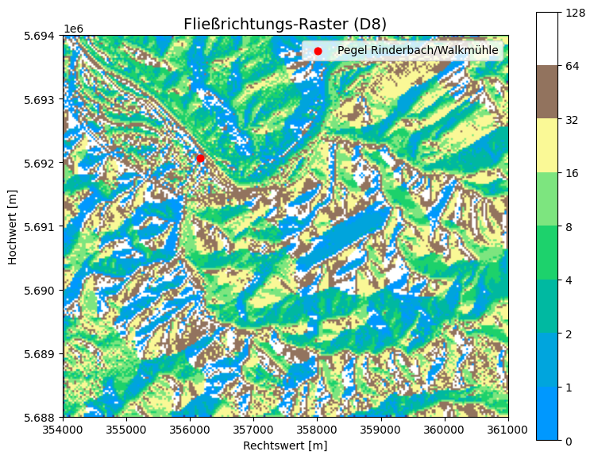
Abflussakkumulation ableiten#
Da jeder Zelle eine Richtung zugewiesen ist, ist das Ergebnis der Abflussakkumulation ein Raster, das zu jeder Zelle die Anzahl der höhergelegenen Zellen angibt, deren Wasser dort hindurchfließt.
acc = grid.accumulation(fdir, dirmap=dirmap)
fig, ax = plt.subplots(figsize=(8, 6))
fig.patch.set_alpha(0)
plt.grid('on', zorder=0)
im = ax.imshow(acc, extent=grid.extent, zorder=2, cmap='cubehelix',
norm=colors.LogNorm(1, acc.max()), interpolation='bilinear')
plt.scatter(x=[pegel_x], y=[pegel_y], zorder=3, c='red', s=40,
label='Pegel Rinderbach/Walkmühle')
plt.colorbar(im, ax=ax, label='höher gelegene Zellen')
plt.title('Abflussakkumulation', size=14)
plt.xlabel('Rechtswert [m]')
plt.ylabel('Hochwert [m]')
plt.legend()
plt.tight_layout()
plt.show()
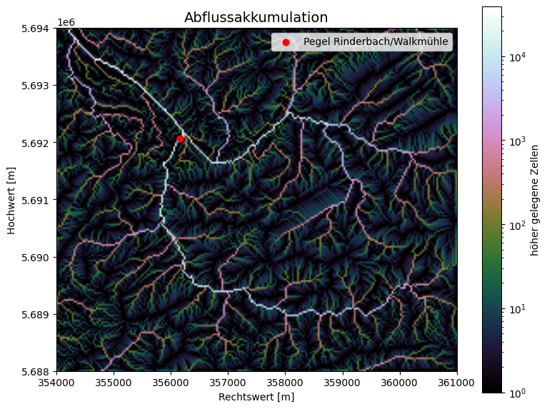
Abgrenzung des Einzugsgebiets#
Wir verwenden die Pegel-Koordinaten als Pour Point (Auslass des Einzugsgebiets). Wenn wir hochaufgelöste Daten und unvollständige Koordinaten eines Abflusspunkts haben, erhalten wir nicht zwingend das richtige Pixel — daher snappen wir die Koordinaten auf eine hoch akkumulierte Zelle in der Nachbarschaft.
# Schwellenwert für die Abflussakkumulation in Zellen.
# Bei 30 m × 30 m-Zellen entsprechen 500 Zellen ≈ 0.45 km².
accumulation_threshold = 500
# Pour Point auf hochakkumulierte Zelle snappen
x_snap, y_snap = grid.snap_to_mask(acc > 1000, (pegel_x, pegel_y))
print(f'Gesnapte Koordinaten: ({x_snap:.1f}, {y_snap:.1f})')
# Einzugsgebiet abgrenzen
catch = grid.catchment(x=x_snap, y=y_snap, fdir=fdir, dirmap=dirmap,
xytype='coordinate')
# Auf das Einzugsgebiet zuschneiden
grid.clip_to(catch)
clipped_catch = grid.view(catch)
Gesnapte Koordinaten: (356133.0, 5692080.0)
fig, ax = plt.subplots(figsize=(8, 6))
fig.patch.set_alpha(0)
plt.grid('on', zorder=0)
ax.imshow(np.where(clipped_catch, clipped_catch, np.nan),
extent=grid.extent, zorder=1, cmap='Greys_r')
plt.scatter(x=[pegel_x], y=[pegel_y], zorder=3, c='red', s=40,
label='Pegel Rinderbach/Walkmühle')
plt.xlabel('Rechtswert [m]')
plt.ylabel('Hochwert [m]')
plt.title('Abgegrenztes Einzugsgebiet — Rinderbach', size=14)
plt.legend()
plt.tight_layout()
plt.show()
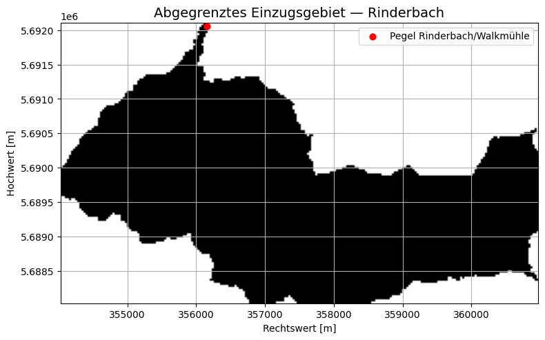
# Flussnetzwerk extrahieren
branches = grid.extract_river_network(fdir, acc > 250, dirmap=dirmap)
fig, ax = plt.subplots(figsize=(8.5, 6.5))
plt.xlim(grid.bbox[0], grid.bbox[2])
plt.ylim(grid.bbox[1], grid.bbox[3])
ax.set_aspect('equal')
for branch in branches['features']:
line = np.asarray(branch['geometry']['coordinates'])
plt.plot(line[:, 0], line[:, 1])
plt.scatter(x=[pegel_x], y=[pegel_y], zorder=3, c='red', s=40,
label='Pegel Rinderbach/Walkmühle')
plt.title('D8 Abflussnetzwerk (Schwellenwert acc > 250)', size=14)
plt.legend()
plt.tight_layout()
plt.show()
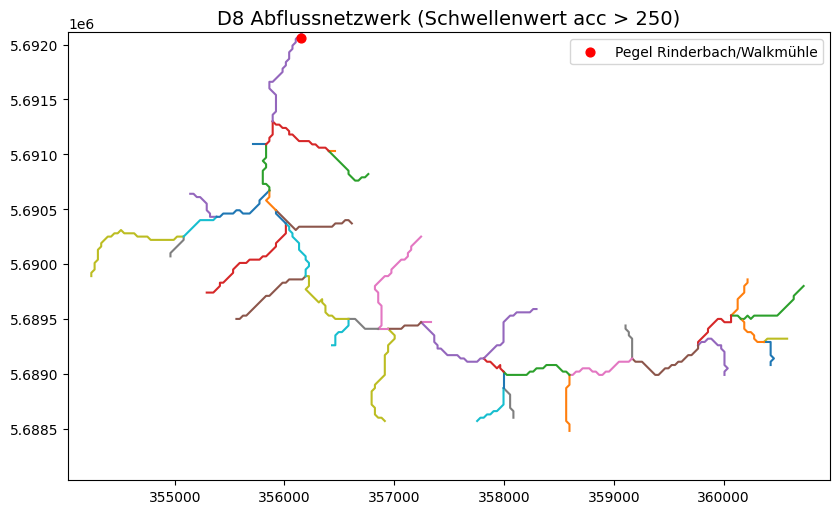
Sensitivität gegenüber dem Akkumulations-Schwellenwert — je höher der Schwellenwert, desto weniger und „hauptsächlichere” Gerinne werden extrahiert. Das ist eine wichtige modellierungstechnische Entscheidung.
# Sensitivität: Flussnetzwerk für drei verschiedene Akkumulations-Schwellenwerte
acc_levels = [250, 500, 750]
fig, axs = plt.subplots(1, len(acc_levels), figsize=(15, 5))
for i, lvl in enumerate(acc_levels):
branches_i = grid.extract_river_network(fdir, acc > lvl, dirmap=dirmap)
axs[i].set_xlim(grid.bbox[0], grid.bbox[2])
axs[i].set_ylim(grid.bbox[1], grid.bbox[3])
axs[i].set_aspect('equal')
for branch in branches_i['features']:
line = np.asarray(branch['geometry']['coordinates'])
axs[i].plot(line[:, 0], line[:, 1])
axs[i].set_title(f'D8 Abflussnetzwerk (acc > {lvl})')
plt.tight_layout()
plt.show()
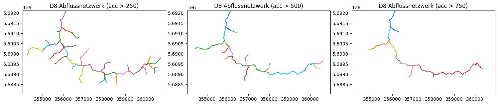
Berechnung der Entfernung zu den flussaufwärtigen Zellen#
# Entfernung jeder Zelle zum Auslass (in Zellen)
dist = grid.distance_to_outlet(x=x_snap, y=y_snap, fdir=fdir, dirmap=dirmap,
xytype='coordinate')
fig, ax = plt.subplots(figsize=(8, 6))
fig.patch.set_alpha(0)
plt.grid('on', zorder=0)
im = ax.imshow(dist, extent=grid.extent, zorder=2, cmap='cubehelix_r')
plt.colorbar(im, ax=ax, label='Distanz zum Auslass [Zellen]')
plt.xlabel('Rechtswert [m]')
plt.ylabel('Hochwert [m]')
plt.title('Fließlänge', size=14)
plt.tight_layout()
plt.show()
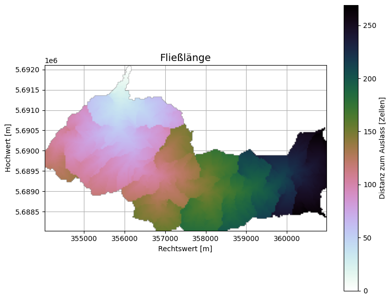
Berechnen der gewichteten Fließzeit#
Basierend auf der Annahme, dass sich Wasser mit derselben Geschwindigkeit fortbewegt (Oberflächenabfluss ist langsamer), bis es sich in einem Gerinne ansammelt und seine Geschwindigkeit stark ansteigt, ordnen wir jeder Zelle eine Fließzeit zu.
# Annahme: in Gerinnezellen fließt Wasser ~10× schneller als in Hangzellen.
# Daher Hangzellen Gewicht 1, Gerinnezellen Gewicht 0.1
acc = grid.accumulation(fdir)
weights = acc.copy()
weights[acc >= accumulation_threshold] = 0.1
weights[(acc > 0) & (acc < accumulation_threshold)] = 1
# Gewichtete Entfernung zum Auslass
weighted_dist = grid.distance_to_outlet(x=x_snap, y=y_snap, fdir=fdir,
weights=weights, xytype='coordinate')
fig, ax = plt.subplots(figsize=(8, 6))
fig.patch.set_alpha(0)
im = ax.imshow(weighted_dist, zorder=2, cmap='cubehelix_r')
plt.colorbar(im, ax=ax, label='Gewichtete Distanz zum Auslass')
plt.title('Gewichtete Distanz zum Auslass', size=14)
plt.xlabel('Spalte')
plt.ylabel('Zeile')
plt.tight_layout()
plt.show()
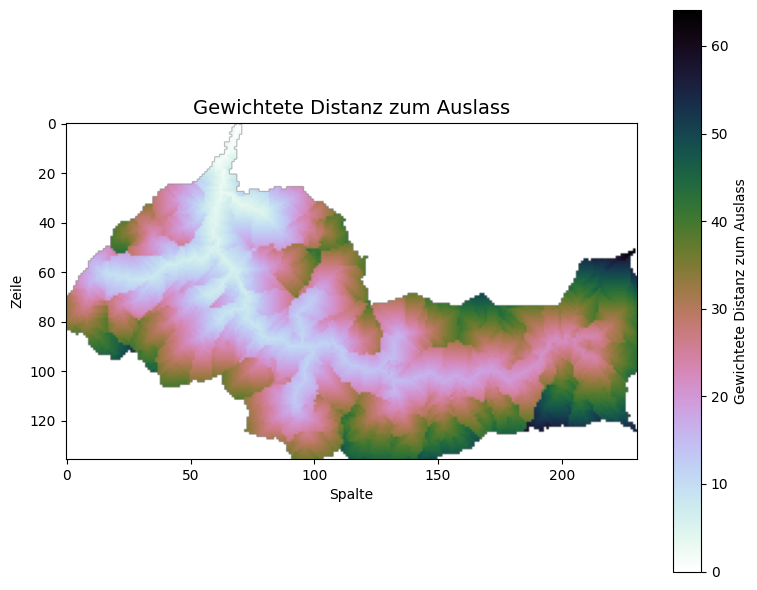
Entwickeln eines einfachen Niederschlags-Abfluss-Modells#
Da wir nun die gewichteten Fließentfernungen für jede Zelle im abgegrenzten Einzugsgebiet haben, können wir den Niederschlag auf jede „Zelle” anwenden, um eine Abflussganglinie zu rekonstruieren.
Beachtet, dass unsere „gewichtete Distanz” nur einen relativen Unterschied zwischen den Gerinne- und den Hangzellen liefert. Wir müssen diese Werte noch in eine zeitabhängige Form umwandeln.
Vorerst gehen wir davon aus, dass die durchschnittliche Fließgeschwindigkeit für die Hangzellen 0,1 m/s beträgt und für die Gerinnezellen 1 m/s (also 10-mal schneller). Dies entspricht den oben verwendeten Gewichten (Hang=1, Gerinne=0.1) relativ zur Hanggeschwindigkeit. So können wir die ungewichtete und gewichtete Konzentrationszeit berechnen.
Das DGM hat eine Auflösung von etwa 30 m (jedes Pixel ≈ 30 × 30 m). Wir wandeln die gewichtete Entfernung in Zeit um, indem wir sie mit der Zellauflösung (30 m) multiplizieren und durch die Referenzgeschwindigkeit (Hanggeschwindigkeit, 0,1 m/s) dividieren.
# Rasterauflösung (m × m)
resolution = (30, 30)
# Zellen nach gewichtetem Abstand zum Auslass gruppieren
dist_df = pd.DataFrame()
dist_df['weighted_dist'] = weighted_dist.flatten()
print('Vor der Aufbereitung:', dist_df.shape)
# Zellen außerhalb des Einzugsgebiets (NaN/inf) entfernen, ganzzahlig runden
dist_df = dist_df[np.isfinite(dist_df['weighted_dist'])].round(0)
print('Nach der Aufbereitung:', dist_df.shape)
dist_df.head()
Vor der Aufbereitung: (31416, 1)
Nach der Aufbereitung: (16037, 1)
| weighted_dist | |
|---|---|
| 69 | 1.0 |
| 299 | 2.0 |
| 300 | 1.0 |
| 301 | 0.0 |
| 529 | 3.0 |
# Anzahl Zellen pro Distanz-Bin
grouped_dists = pd.DataFrame(dist_df.groupby('weighted_dist').size())
grouped_dists.columns = ['num_cells']
grouped_dists.head()
| num_cells | |
|---|---|
| weighted_dist | |
| 0.0 | 6 |
| 1.0 | 19 |
| 2.0 | 37 |
| 3.0 | 44 |
| 4.0 | 74 |
# Verteilung der gewichteten Distanzen plotten (Width-Funktion W(x))
W = np.bincount(weighted_dist[np.isfinite(weighted_dist)].astype(int))
fig, ax = plt.subplots(figsize=(10, 5))
plt.fill_between(np.arange(len(W)), W, 0, edgecolor='seagreen',
linewidth=1, facecolor='lightgreen', alpha=0.8)
plt.ylabel(r'Anzahl Zellen bei Entfernung $x$ vom Auslass', size=12)
plt.xlabel(r'Entfernung vom Auslass $x$ [Zellen]', size=12)
plt.title('Weite-Funktion $W(x)$', size=14)
plt.tight_layout()
plt.show()
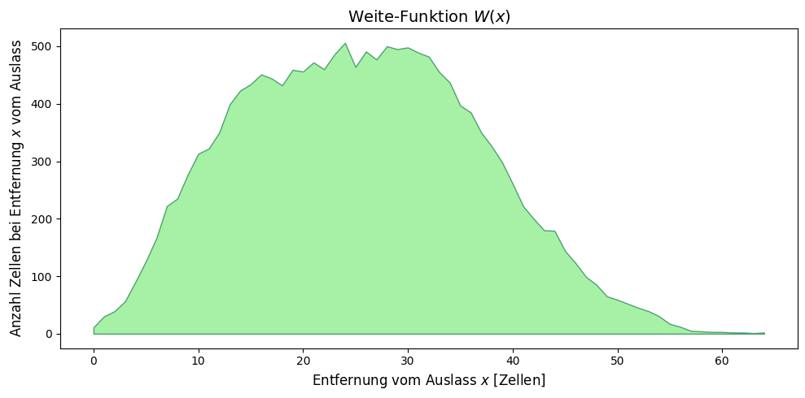
flow_velocity = 0.1 # m/s (Referenz-Hanggeschwindigkeit)
# Distanz [Zellen] -> Zeit [Stunden]
w_time = weighted_dist * resolution[0] / flow_velocity / 3600
W_time = np.bincount(w_time[np.isfinite(w_time)].astype(int))
fig, ax = plt.subplots(figsize=(10, 5))
plt.fill_between(np.arange(len(W_time)), W_time, 0, edgecolor='seagreen',
linewidth=1, facecolor='lightgreen', alpha=0.8)
plt.ylabel(r'Anzahl Zellen $x$ Stunden vom Auslass', size=12)
plt.xlabel(r'Zeit zum Auslass $x$ [h]', size=12)
plt.title('Weite-Funktion $W(x)$ ~ Einheitsganglinie', size=14)
plt.tight_layout()
plt.show()
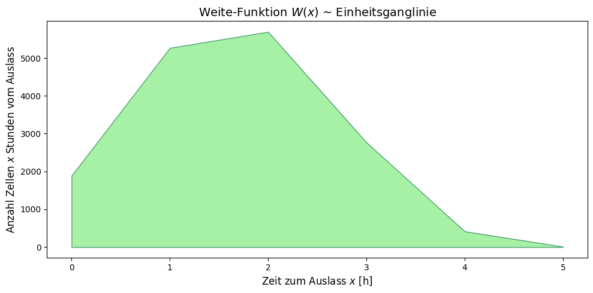
Hinweis: Oben haben wir eine geschätzte Einheitsganglinie für eine Niederschlagseinheit entwickelt, die gleichmäßig über das Einzugsgebiet fällt. Dies haben wir allein mit Höhendaten (DGM) und einer Annahme zum Unterschied in den Fließgeschwindigkeiten zwischen Gerinnen und Hangströmung gemacht.
Importieren und kürzen der stündlichen Niederschlagsdaten#
Wir laden die stündlichen Niederschlagsdaten neu und beschränken sie auf den Tag des betrachteten Niederschlagsereignisses (26.02.2024), für den wir später die gemessene Pegelantwort am Rinderbach vergleichen werden.
# Stündliche Daten erneut einlesen (sicherheitshalber, da `hourly_df` u.U. modifiziert)
hourly_df = pd.read_csv(
data_path + 'hourly_1303.csv',
sep=';', decimal=',', parse_dates=['date'], index_col='date',
)
if hourly_df.index.tz is not None:
hourly_df.index = hourly_df.index.tz_localize(None)
# Auf den Tag des betrachteten Ereignisses kürzen
event_start = '2024-02-26'
event_end = '2024-02-26'
hourly_df = hourly_df.loc[event_start:event_end].copy()
hourly_source = ColumnDataSource(hourly_df)
print(f'Ereignisfenster: {hourly_df.index.min()} – {hourly_df.index.max()}')
print(f'Stündliche Niederschlagssumme: {hourly_df["value"].sum():.1f} mm')
hourly_df.head()
Ereignisfenster: 2024-02-26 00:00:00 – 2024-02-26 23:00:00
Stündliche Niederschlagssumme: 8.2 mm
| station_id | dataset | parameter | value | quality | |
|---|---|---|---|---|---|
| date | |||||
| 2024-02-26 00:00:00 | 1303 | precipitation | precipitation_height | 0.0 | 1.0 |
| 2024-02-26 01:00:00 | 1303 | precipitation | precipitation_height | 0.0 | 1.0 |
| 2024-02-26 02:00:00 | 1303 | precipitation | precipitation_height | 0.0 | 1.0 |
| 2024-02-26 03:00:00 | 1303 | precipitation | precipitation_height | 0.0 | 1.0 |
| 2024-02-26 04:00:00 | 1303 | precipitation | precipitation_height | 0.6 | 1.0 |
Berechnung des Gesamtabflusses und Vergleich mit dem gemessenen Tagesvolumen#
HINWEIS: Wenn ihr den Abflusskoeffizienten unten aktualisiert, müsst ihr den Code von hier aus erneut ausführen, um den DataFrame
runoff_dfneu zu initialisieren. Andernfalls werden die Werte akkumuliert.
# Erstellung einer leeren Abflusszeitreihe für jede Niederschlagsstunde
runoff_df = pd.DataFrame(np.zeros(len(hourly_df)), columns=['Total Precip (mm)'])
runoff_df.index = hourly_df.index.copy()
end_time = pd.to_datetime(runoff_df.index.values[-1]) + pd.DateOffset(hours=1)
max_distance = max(grouped_dists.index)
def calculate_flow_time(distance, v):
"""Distanz [Zellen] -> volle Stunden Fließzeit (auf nächste Stunde aufgerundet)."""
return np.ceil(distance * resolution[0] / v / 3600)
# Maximale Fließzeit (Konzentrationszeit) im Einzugsgebiet
max_flow_time = int(calculate_flow_time(max_distance, flow_velocity))
print(f'Maximaler Abflussweg = {max_distance} Zellen, '
f'maximale Fließzeit = {max_flow_time} Stunden.')
# DataFrame um diese maximale Fließzeit nach hinten verlängern
extended_df = pd.DataFrame({'Total Precip (mm)': [0] * (max_flow_time + 1)},
index=pd.date_range(end_time, periods=max_flow_time + 1, freq='h'))
runoff_df = pd.concat([runoff_df, extended_df])
runoff_df['Runoff (cms)'] = 0.0 # explizit float
Maximaler Abflussweg = 64.0 Zellen, maximale Fließzeit = 6 Stunden.
Was unten passiert: Wir berechnen für jede Niederschlagsstunde den Zeitversatz, den der Abfluss benötigt, um von jeder Zelle zum Auslass zu gelangen. Da nicht jede Zelle die gleiche Zeit braucht, addieren wir den Abfluss jeder Zelle zu einem zukünftigen Zeitpunkt, der der Fließzeit der Zelle entspricht. Effizienter wird es, indem wir Zellen mit gleichem Abstand gruppieren.
Nachfolgend nehmen wir einen Abflusskoeffizienten von 0,71 an. D.h. 71 % unseres Niederschlags werden abflusswirksam (Wert wurde in der zugrundeliegenden Adaption an die Pegelmessungen kalibriert). Später werden wir sehen, wie gut das Modellergebnis zum gemessenen Wert passt.
# Sicherstellen: Spalte ist float
runoff_df['Runoff (cms)'] = runoff_df['Runoff (cms)'].astype(float)
runoff_coefficient = 0.71
for ind, row in hourly_df.iterrows():
for weight_dist, num_cells_row in grouped_dists.iterrows():
# Fließzeit (auf volle Stunde aufgerundet) für diese Distanz-Gruppe
weighted_time_hrs = calculate_flow_time(weight_dist, flow_velocity)
outlet_time = ind + pd.Timedelta(hours=weighted_time_hrs)
if weighted_time_hrs < 1:
outlet_time = ind + pd.Timedelta(hours=1)
num_cells_value = num_cells_row['num_cells']
precip_vol = num_cells_value * row['value'] # mm·#cells
# Volumen in m³: mm/1000 -> m, mal Zellfläche resolution²
runoff_vol_m3 = precip_vol * runoff_coefficient / 1000 * resolution[0] ** 2
runoff_rate_cms = runoff_vol_m3 / 3600 # m³/s gemittelt über 1 h
if outlet_time in runoff_df.index:
runoff_df.loc[outlet_time, 'Runoff (cms)'] += runoff_rate_cms
# Tagesvolumen aus dem stündlich modellierten Abfluss
runoff_df['day'] = runoff_df.index.day
runoff_df['runoff_vol_cmh'] = runoff_df['Runoff (cms)'] * 3600
cumulative_vol = runoff_df[['runoff_vol_cmh', 'day']].groupby('day').sum()
cumulative_vol.rename(columns={'runoff_vol_cmh': 'runoff_vol_m3d'}, inplace=True)
cumulative_vol
| runoff_vol_m3d | |
|---|---|
| day | |
| 26 | 84030.6726 |
| 27 | 0.0000 |
Pegel-Daten (Bergisch-Rheinischer Wasserverband) importieren#
Wir importieren die Tagesmittel-Abflussdaten des Pegels Rinderbach/Walkmühle des Bergisch-Rheinischen Wasserverbandes (BRW). Das CSV-Format hat 13 Header-Zeilen mit Metadaten (Stationsname, Koordinaten, Einheit etc.).
pegel_path = data_path + 'pegel_rinderbach_BRW.csv'
pegel_df = pd.read_csv(pegel_path, skiprows=13, sep=';', decimal=',',
index_col='Tag', parse_dates=True, dayfirst=True)
# Auf das Ereignis kürzen (Tag des Ereignisses + Folgetag)
pegel_df = pegel_df.loc['2024-02-26':'2024-02-27'].round(3)
pegel_df['Tages Mittel'] = pegel_df['Tages Mittel'].astype(float)
pegel_df
| Tages Minimum | Tages Mittel | Tages Maximum | Status | |
|---|---|---|---|---|
| Tag | ||||
| 2024-02-26 | 0.373 | 0.567 | 1.286 | NaN |
| 2024-02-27 | 0.373 | 0.413 | 0.467 | NaN |
# Vergleich modellierter ↔ gemessener Tagesabfluss
# Hinweis: für ein Mittelgebirgs-EZG wie den Rinderbach ist der Basisabfluss deutlich
# kleiner als der Spitzenabfluss eines Niederschlagsereignisses; wir setzen ihn
# vereinfacht auf 0 (Sensitivitätsanalyse möglich).
pegel_df['excess_flow'] = pegel_df['Tages Mittel']
pegel_df['excess_volume'] = pegel_df['excess_flow'] * 3600 * 24 # m³/Tag
# Modelliertes Tagesvolumen einfügen (nur für die Tage mit modellierten Werten)
modelled_days = cumulative_vol.values.flatten()
target_idx = pegel_df.index[:len(modelled_days)]
pegel_df.loc[target_idx, 'model_volume'] = modelled_days
pegel_df
| Tages Minimum | Tages Mittel | Tages Maximum | Status | excess_flow | excess_volume | model_volume | |
|---|---|---|---|---|---|---|---|
| Tag | |||||||
| 2024-02-26 | 0.373 | 0.567 | 1.286 | NaN | 0.567 | 48988.8 | 84030.6726 |
| 2024-02-27 | 0.373 | 0.413 | 0.467 | NaN | 0.413 | 35683.2 | 0.0000 |
# Plot: modellierter stündlicher Abfluss vs. Niederschlag
fig, ax = plt.subplots(1, 1, figsize=(16, 4))
ax.plot(runoff_df.index, runoff_df['Runoff (cms)'],
color='blue', label='Modellierter stündlicher Abfluss')
ax.set_xlabel('Datum')
ax.set_ylabel('Abfluss [m³/s]', color='blue')
ax.set_title('Beispiel Niederschlags-Abfluss-Modell — Rinderbach (Essen-Kettwig)')
ax.legend(loc='upper left')
ax.tick_params(axis='y', colors='blue')
ax1 = ax.twinx()
ax1.bar(hourly_df.index, width=pd.Timedelta(hours=1), height=hourly_df['value'],
color='green', alpha=0.5, label='Stündlicher Niederschlag')
ax1.set_ylabel('Niederschlag [mm]', color='green')
ax1.tick_params(axis='y', colors='green')
ax1.legend(loc='upper right')
plt.tight_layout()
plt.show()
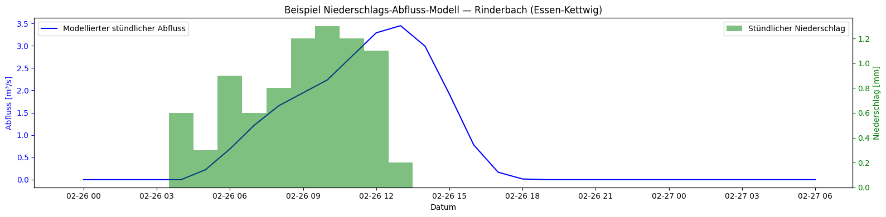
Vergleich des modellierten vs. gemessenen Abflusses#
Wir können den stündlich modellierten und den täglich gemessenen Durchfluss nicht direkt vergleichen, aber wir können das Gesamtvolumen vergleichen.
Wir vergleichen also den modellierten Überschussabfluss aus Niederschlägen mit dem gemessenen Abfluss (bereinigt um den angenommenen Basisabfluss). Nachfolgend addieren wir den gesamten Volumenfluss über das Niederschlagsereignis und vergleichen ihn mit dem gesamten modellierten Abflussvolumen des selben Zeitraumes.
tot_runoff = pegel_df[['excess_volume', 'model_volume']].sum()
relative_error = 100 * (tot_runoff['excess_volume'] - tot_runoff['model_volume']) / tot_runoff['excess_volume']
print(f'Gemessenes Volumen: {tot_runoff["excess_volume"]:>12,.0f} m³')
print(f'Modelliertes Volumen: {tot_runoff["model_volume"]:>12,.0f} m³')
print(f'Relativer Fehler: {relative_error:>12.1f} %')
print()
print(f'Bei einem Abflusskoeffizienten von {runoff_coefficient} '
f'({100*runoff_coefficient:.0f}% des Niederschlages sind effektiver Niederschlag) '
f'beträgt der Vorhersagefehler über das Niederschlagsereignis {relative_error:.0f} %.')
Gemessenes Volumen: 84,672 m³
Modelliertes Volumen: 84,031 m³
Relativer Fehler: 0.8 %
Bei einem Abflusskoeffizienten von 0.71 (71% des Niederschlages sind effektiver Niederschlag) beträgt der Vorhersagefehler über das Niederschlagsereignis 1 %.
Ähnlich wie beim Zeitbeiwertverfahren schauen wir uns die Unsicherheit an, welche durch die Wahl des Abflusskoeffizienten begründet ist. Die SCS-Verfahren drücken Niederschlag, der nicht effektiv ist (also nicht als Direktabfluss wirksam wird), als Verlust aus.
In diesem Beispiel testen wir den Niederschlagsverlust durch Infiltration, der den effektiven Niederschlag, die Verzögerungszeit und die Konzentrationszeit bestimmt. Um die Annahmen besser zu veranschaulichen, visualisieren wir den Niederschlag in einem Bereich von (konstanten) Verlustraten im Vergleich zu den stündlichen Daten, die wir oben importiert haben.
precip_losses = [1, 2, 4] # mm/h
p = figure(title='Niederschlag vs. Verluste', width=750, height=300, x_axis_type='datetime')
p.vbar(x='date', width=pd.Timedelta(hours=1), top='value',
bottom=0, source=hourly_source,
legend_label='Stündlicher Niederschlag',
color='royalblue', fill_alpha=0.5)
t_loss = [hourly_df.index[0], hourly_df.index[-1]]
plot_colors = ['blue', 'green', 'orange', 'red']
for i, l in enumerate(precip_losses):
p.line(t_loss, [l, l], line_dash='dashed',
legend_label=f'{l} mm/h Verlust', color=plot_colors[i])
p.legend.location = 'top_left'
p.xaxis.axis_label = 'Datum'
p.yaxis.axis_label = 'Niederschlag [mm]'
p.toolbar_location = 'above'
show(p)
Das obige Diagramm zeigt den effektiven Niederschlag als blauen Bereich über jeder der Verlustfunktionslinien. Wir können die verschiedenen Mengen des effektiven Niederschlags jedoch auch tabellarisch darstellen.
for l in precip_losses:
hourly_df[f'excess_{l}'] = (hourly_df['value'] - l).clip(lower=0)
hourly_df['day'] = hourly_df.index.day
excess_rainfall = (hourly_df[[f'excess_{l}' for l in precip_losses] + ['day']]
.groupby('day').sum())
excess_rainfall
| excess_1 | excess_2 | excess_4 | |
|---|---|---|---|
| day | |||
| 26 | 0.8 | 0.0 | 0.0 |
Lasst uns abschließend den Bereich der Niederschlagsverlustwerte anhand der Gesamtniederschlagsmengen sowie der gemessenen Gesamtabflussmenge vergleichen, um zu sehen, wie diese mit unserem angenommenen Abflusskoeffizienten von 71 % übereinstimmen.
# Bokeh-Plot: effektiver Niederschlag je Verlustrate (versetzt für Lesbarkeit)
hourly_source = ColumnDataSource(hourly_df)
p = figure(title='Effektiver Niederschlag', width=650, height=250, x_axis_type='datetime')
for i, l in enumerate(precip_losses):
p.vbar(x='date', width=pd.Timedelta(minutes=20), top=f'excess_{l}',
bottom=0, source=hourly_source,
legend_label=f'{l} mm Verlust', color=plot_colors[i], fill_alpha=0.5)
# Visueller Trick: Index um 20 min verschieben, damit Balken nebeneinander liegen
hourly_df.index += pd.Timedelta(minutes=20)
hourly_source = ColumnDataSource(hourly_df)
# Index zurücksetzen (3 × 20 min = 1 h)
hourly_df.index -= pd.Timedelta(hours=1)
p.legend.location = 'top_left'
show(p)
# Welcher Anteil des Niederschlags wird bei welcher Verlustrate effektiv?
total_hourly_vol = hourly_df.groupby('day').sum()[['value'] + [f'excess_{l}' for l in precip_losses]]
tot_df = total_hourly_vol.sum()
for ev in precip_losses:
e_pct = tot_df[f'excess_{ev}'] / tot_df['value']
tot_df[f'pct_excess_{ev}'] = e_pct
print(f'{ev} mm/h Verlust -> {100*e_pct:5.1f} % des Niederschlags wird Direktabfluss')
1 mm/h Verlust -> 9.8 % des Niederschlags wird Direktabfluss
2 mm/h Verlust -> 0.0 % des Niederschlags wird Direktabfluss
4 mm/h Verlust -> 0.0 % des Niederschlags wird Direktabfluss
Fragen, die im Rahmen der Hausarbeit beantwortet werden sollen#
Welche Faktoren in unserem Einheitsganglinienmodell wirken sich auf die Größe des Scheitelabflusses aus?
Wie lassen sich die Schätzungen des SCS-CN-Scheitelabflusses mit der Gerinnekapazität vergleichen, die wir zu Beginn ermittelt haben? Würdet ihr das Risiko eingehen, dass das Gerinne überläuft, möglicherweise das aquatische Ökosystem im Rinderbach gefährdet und ihr somit gegen die Bestimmungen des Wasserhaushaltsgesetzes (WHG) verstoßt?
Gegen Ende des Notebooks (bei unserem flächendetaillierten Modell) schätzten wir die Abflussreaktion anhand der stündlichen Niederschläge und gehen von einem Abflusskoeffizienten von 0,71 aus. Wie könntet ihr verifizieren, dass dies eine korrekte Annahme ist? Was passiert mit dem restlichen Niederschlag?
Würdet ihr eines der in diesem Notebook besprochenen Modelle als „besser” oder „schlechter” bewerten? Könnt ihr die Modelle in einer kurzen Erläuterung zu folgenden Punkten verteidigen:
Informationsanforderungen,
Komplexität &
Interpretierbarkeit?
Bonus#
Wir haben die Python-Bibliothek pysheds verwendet, um ein Einzugsgebiet am Pegel Rinderbach/Walkmühle abzugrenzen. Lässt sich aus der Rasterdatei des Einzugsgebietes auch die Einzugsgebietsfläche ermitteln? Geht hier von einer Zellenauflösung von 30 × 30 m aus.
Mega-Bonus#
Der Anteil des effektiven Niederschlags hängt von vielen Bedingungen ab. Untersucht mithilfe der vollständigen DWD-Zeitreihe (
daily_1303.csv) und der vollständigen Pegel-Zeitreihe (pegel_rinderbach_BRW.csv), ob sich ein „langfristiger” (robusterer) Abflusskoeffizient für das Rinderbach-Einzugsgebiet schätzen lässt. Wie unterscheidet sich dieser möglicherweise zwischen den Jahreszeiten?